Overview
Give a high-level overview of what you implemented in this project. Think about what you've built as a whole. Share your thoughts on what interesting things you've learned from completing the project.
In this project, we implemented parts of a 2D rasterization pipeline for triangles. We implemented sampling, supersampling, texture mapping, and mipmaps. We learned about the math and algorithms used to render things that we use every day, like laptop screens. One of the most interesting things we learned during this project is how to implement antialiasing techniques, such as supersampling, to reduce aliasing and jaggies. It was fascinating to see how a simple technique like supersampling can significantly improve the visual quality of the rendered images, and how poor quality the rendered images are without it.
Section I: Rasterization
Part 1: Rasterizing single-color triangles
We had 2 approaches to triangle rasterization. The first one, inspired by what we learned in lecture, was the simplest. We determined the bounding box that surrounded the image by figuring out the lowest and highest x,y values for triangle vertices. We designed a function `inside_tri` which returned a boolean if a given point was inside of a triangle. `inside_tri` is based on the approach we learned in class, where we conducted a 3 point-in-triangle test. If the triangle was inside all 3 lines of the triangle, the method returned `true`.The second approach we switched to in later problems because we noticed an issue with `texmap` and `illustration` tests where our images were missing half of the triangles. The new approach was to use the barycentric coordinates to determine whether a point was inside of a triangle. We calculated the barycentric coordinate for every point in our triangle bounding box, and then if every barycentric value was between 0 and 1, inclusive, we filled the pixel. This resolved the issue we had earlier.
Our algorithm is no worse than one that checks each sample within the bounding box of the triangle, because that is what our algorithm did.
| 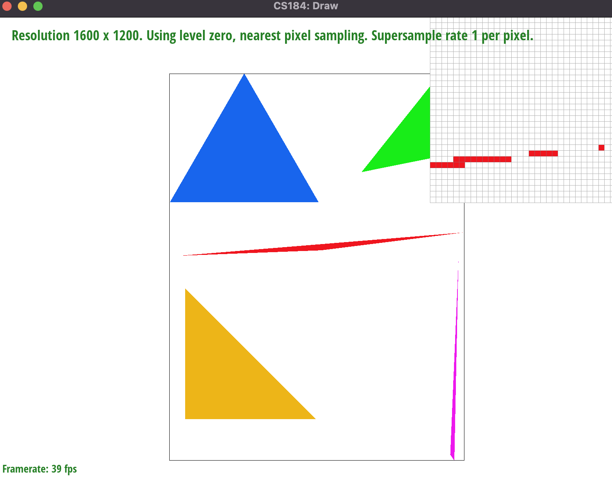 | |
Part 2: Antialiasing triangles
To implement supersampling, we sampled the image at a higher resolution according to the sampling rate. We used a sample buffer as an intermediate data structure to store colors collected from sampling. Then, we downsampled the sample buffer to the original resolution by averaging each square with length sqrt(sampling rate). We had to change our rasterization pipeline to account for this downsampling from the sample buffer to the frame buffer.Supersampling is useful as it improves the visual quality of the rendered image, especially when there are sharp edges or high-contrast (high frequency) regions. It helps reduce the visual artifacts that are present due to the discrete nature of pixels in digital images.
At sample rate 1, there is no supersampling, so we can see a lot of aliasing. At sample rates 4 and especially 16, the effect of the jaggies are reduced greatly. The pixels that were white before are now some shade of red, which is caused by the supersampling.
|
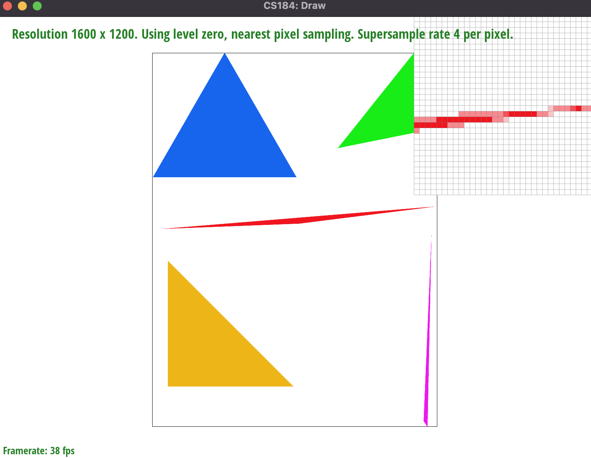
|
|
| 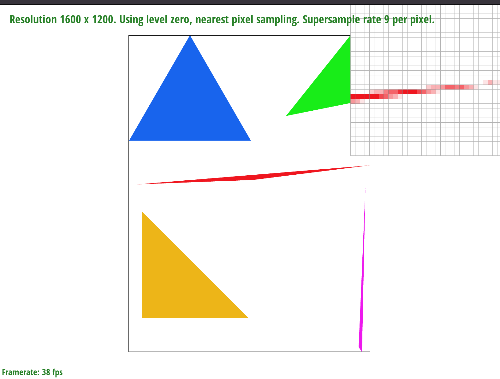 |
Part 3: Transforms
I made the robot wave. I moved his left arm (from our persepctive) up, and his right arm down, and also tilted his head a bit.| 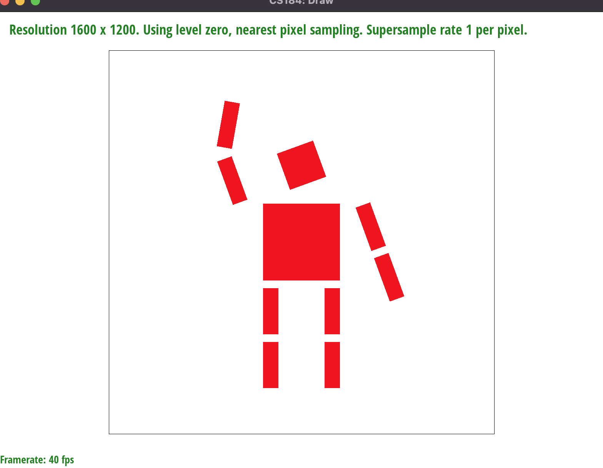 | |
Section II: Sampling
Part 4: Barycentric coordinates
Barycentric coordinates are a way to parameterize the points inside a triangle. A point is defined as a tuple (alpha, beta, gamma), where the point’s location is alpha*P0, beta*P1, gamma*P2, where (P0, P1, and P2) are the vertices of the triangle. Alpha, beta, and gamma also represent a ratio of areas, as depicted in the image below.Barycentric coordinates are useful because they provide an easy way to compute texture maps.

|
|
Part 5: "Pixel sampling" for texture mapping
Pixel sampling is determining the color of a pixel by sampling the color of the corresponding point in the texture map. We implemented pixel sampling two ways: nearest, and bilinear. In the nearest method, we simply rounded the pixel to its nearest point in UV space by flooring u and v. In the bilinear method, use the weighted average of the four nearest texels to the sample point to determine the pixel color. Bilinear looks better in theory, but is more expensive. We couldn't really tell any difference between bilinear and nearest, even when we zoomed in on the images a lot. In theory, bilinear would “smooth” the colors more using a weighted average, which reduces blocky artifacts, similarly to supersampling.| 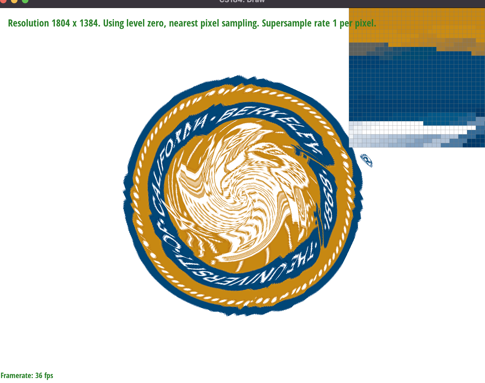 | 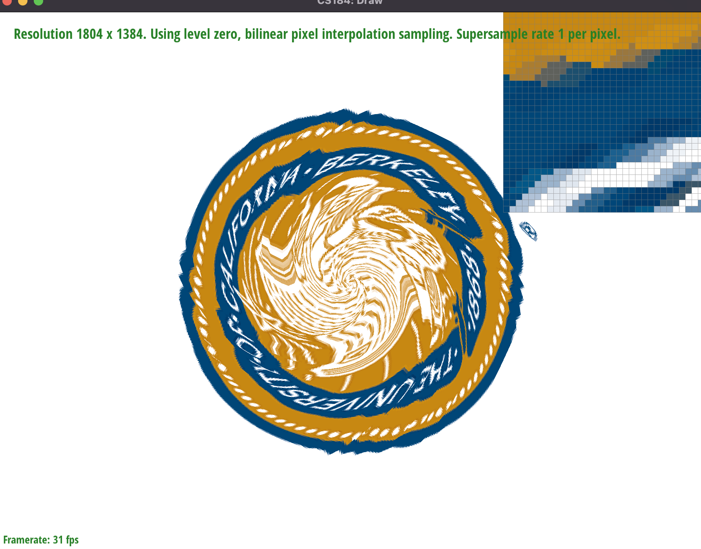 |
| 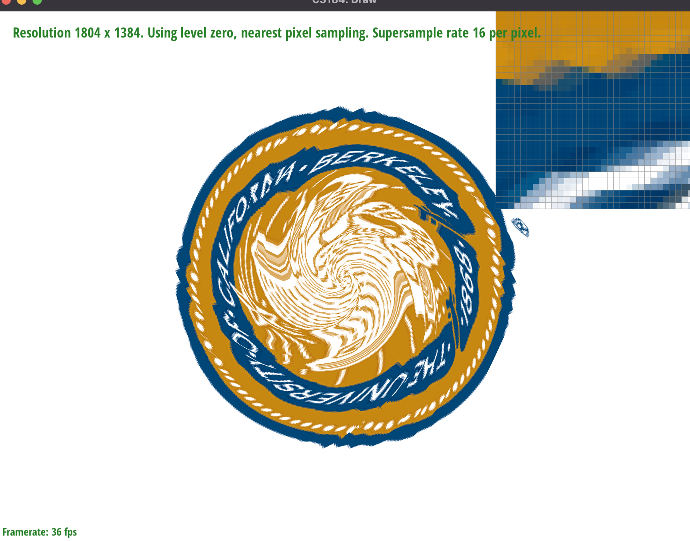 | 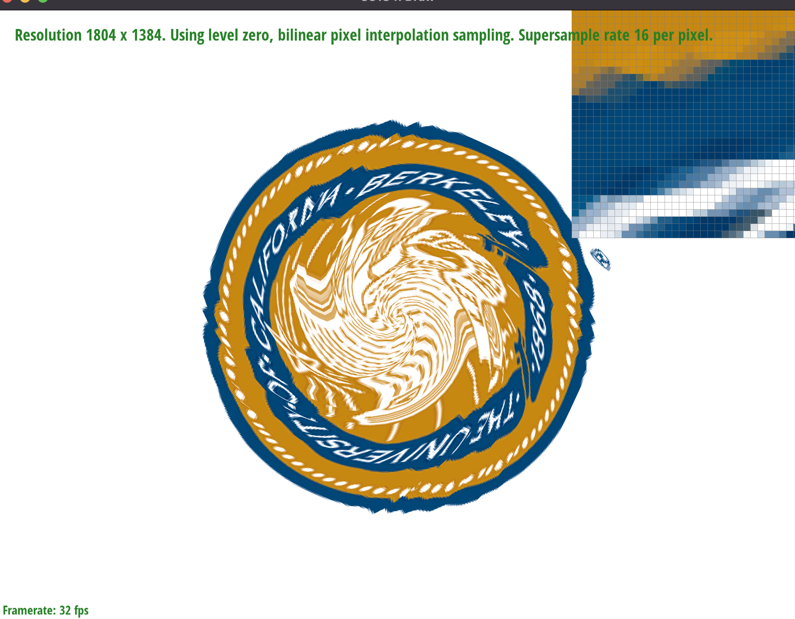 |
Part 6: "Level sampling" with mipmaps for texture mapping
Level sampling is the process of selecting a mipmap level of a texture to use for texture mapping based on the size of the rendered shape. To implement level sampling, we determined which mipmap level to use based on the equation from lecture. We either used pixel sampling on the nearest level, or used a weighted average of pixel sampling on the above/below levels.Supersampling uses a lot of time and memory, but does a really good job of reducing artifacts. Level sampling is fast, but requires more memory to store the mipmap levels. Pixel sampling is fast and does not require much additional memory, but does not provide as much antialiasing power.
| 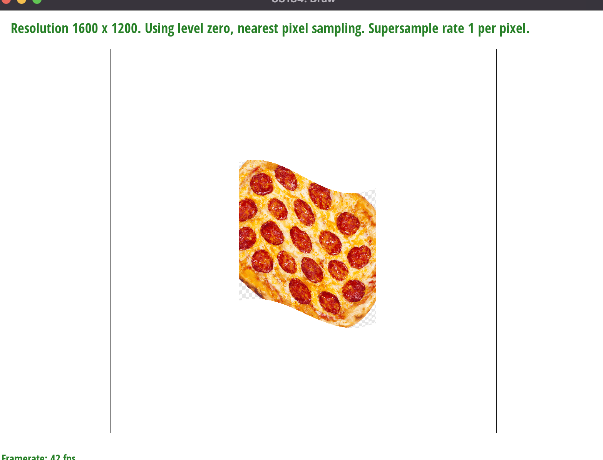 | 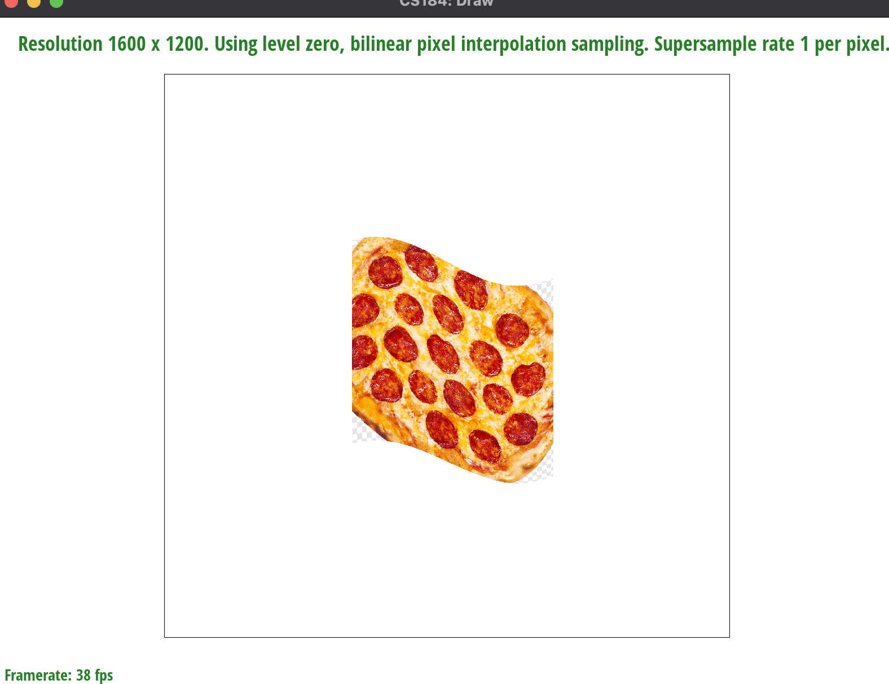 |
| 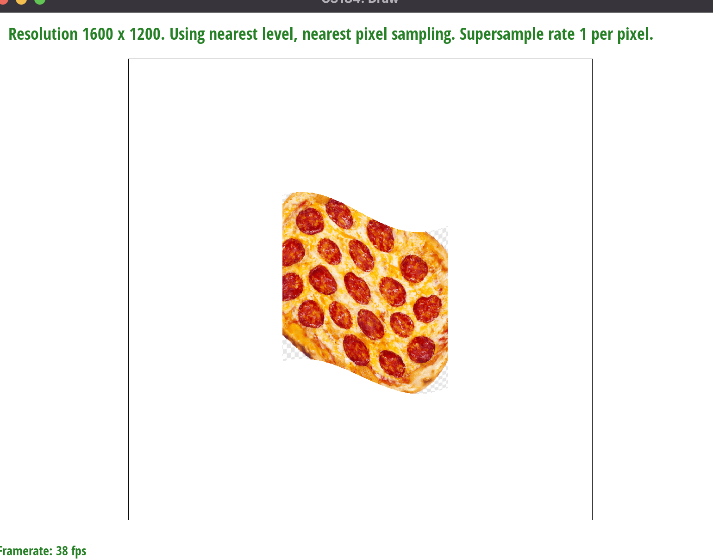 | 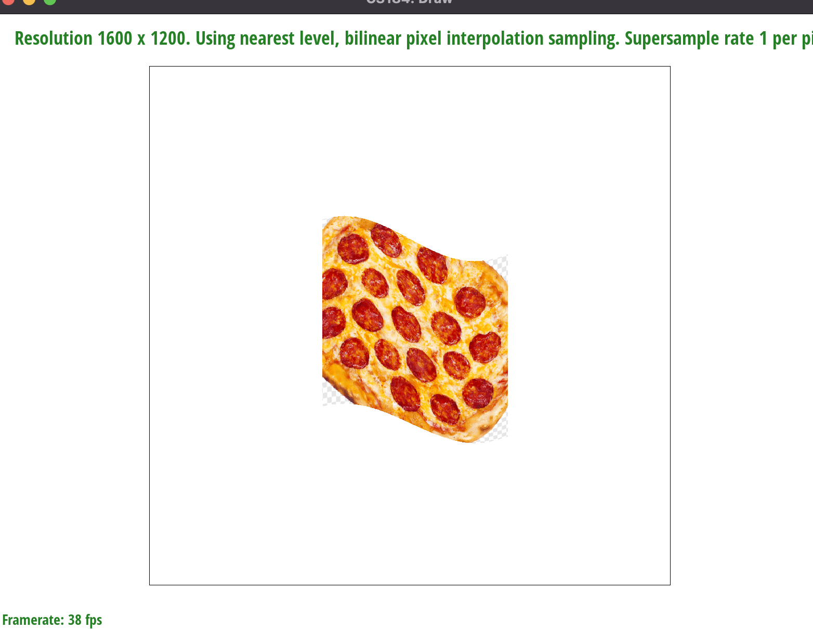 |
Section III: Art Competition
If you are not participating in the optional art competition, don't worry about this section!